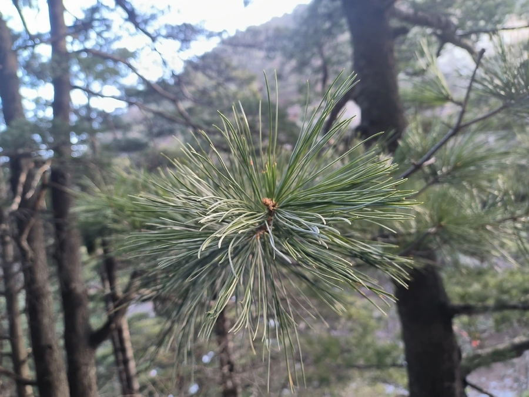

乔木 · 植物界
油松 Pinus tabuliformis

中国北方山地最常见的松树之一，针叶两针一束、粗硬，树皮红褐色，是荒山绿化与用材林的主要树种。
- 分类
- 门裸子植物门纲松柏纲目松柏目科松科属松属
- 栖息环境
- 海拔 800–2000 米的北方山地、丘陵与岩石坡地，喜光耐旱耐寒
- 地理分布
- 中国华北、西北、东北南部及黄河流域各省
- 保护级别
- 暂无评估；中国未列入国家重点保护野生植物名录
物种志
油松为常绿针叶乔木，高可达 25 m，树皮灰褐色至红褐色、呈鳞片状纵裂，老树下部树皮厚而粗糙；针叶 2 针一束，长 10–15 cm，粗硬，在枝端丛生。雌雄同株，雄球花橙黄色、聚生于新枝基部，雌球花紫红色、生于枝顶；球果卵圆形，长 4–9 cm，成熟时黄色至褐色，鳞盾明显隆起。
油松分布于中国华北、西北、东北南部及黄河流域，是北方山地的主要松树，喜光、耐寒、耐旱，能适应瘠薄干燥的土壤，在岩石裸露的山坡上也能生长，是荒山造林与水土保持的先锋树种。木材纹理直、耐腐，可供建筑、矿柱与家具用；松脂可提炼松香与松节油；松花粉可入药。油松树姿苍劲，常被制作盆景，也是北方城市常见的园林树种。
形态与习性
- 株高可达 25 m，树皮红褐色
- 花期4–5 月，雄球花橙黄色
- 球果成熟翌年 9–10 月，长 4–9 cm
- 光照强阳性，不耐庇荫
- 水分耐旱，年降水量 400 mm 左右可生长
- 土壤耐瘠薄，喜微酸性至中性土壤
- 主要用途建筑与矿柱用材、采脂、荒山造林与盆景
趣味知识
- 油松的针叶两针一束、粗硬扎手，与针叶细软的马尾松容易区分。
- 油松是中国北方荒山造林的主要树种，能在岩石裸露的瘠薄山坡上生长。
- 油松的树皮红褐色、呈鳞片状开裂，老树树干常被割取松脂。
- 油松耐旱耐寒，在年降水量 400 mm 左右的地区也能正常生长。